网络编程参考：代码用例
1. 网络协议
1. 二层协议
- 二层协议主要解决哪些问题？
- 帧的源头及目的地（通过mac头标明接收方和发送方)
- 发送帧的规则
1. 轮流协议：多个发送放轮流发送
2. 信道划分：多个发送方往不通的信道发送
3. 随机接入协议：多个发送放随机发送。
- 如何纠正发送错误
通过在帧的最后加入crc校验码检验数据错误。
-
二层帧的传送格式 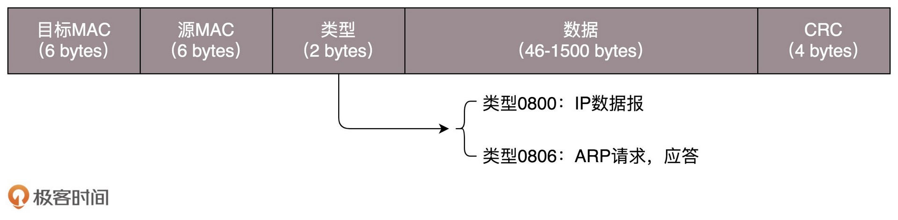
-
二层硬件设备 交换机
-
交换机如何构建拓扑结构？ 广播+学习， 每次通过包发送接口记录来源到mac地址到转发表，当所有接口都发送过一次数据后转发表也就补充完整了。
-
交换机的环路如何解决？ STP 协议，原理就是最小生成树
-
什么是vlan? 有什么用 vlan是用来实现虚拟局域网的，具体实现原理就是在二层协议头加一个tag，用来区分该帧属于哪个虚拟网络，只有tag相同的才会互相转发。 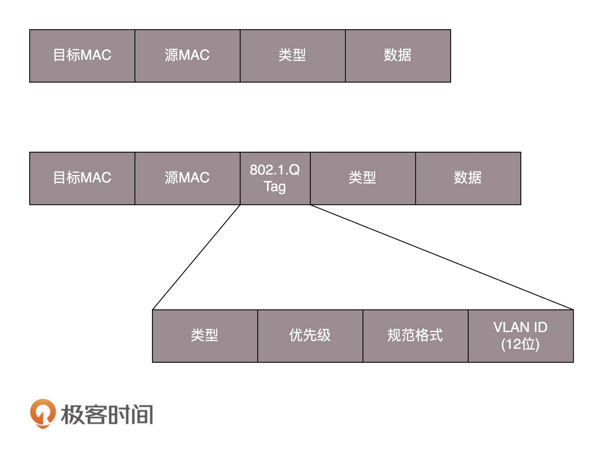
-
支持Vlan的交换机互相是通过什么口连接的 Trunk口，它可以转发属于任何vlan的包。
-
ARP协议有什么作用？ 通过ip地址得到mac地址，帧格式如下 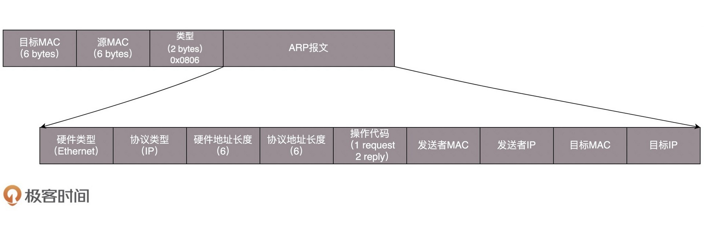 ARP协议是通过向局域网内广播ARP格式的包得到对应ip的mac地址。
2. 三层协议
-
icmp 协议的作用是什么？ 侦测当前网络状况
-
icmp的实现有哪些？ ping: 实现了icmp的查询报文 Traceroute：实现了icmp的差错报文
-
ip协议格式 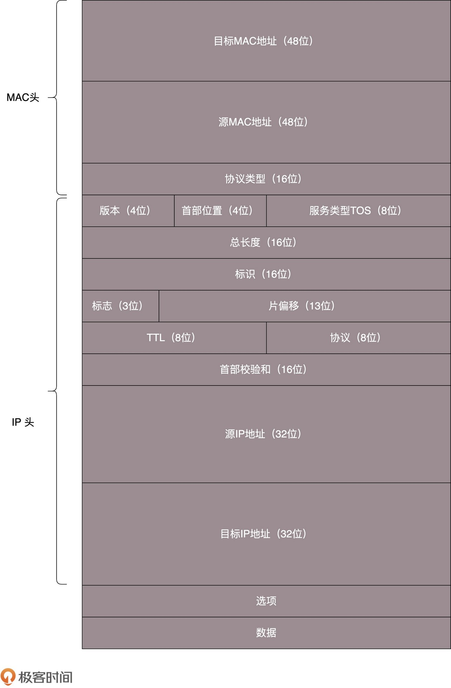 mac头中的16位协议类型标明上层协议是什么类型 ip头中 版本指协议版本ipv4还是ipv6, TOS表示包的优先级，0最高，1普通，2最低。系统优先处理高优先级的包 TTL:指的是的经过多少次路由，每经过一次路由TTL值减一 8位协议：表示上层协议是TCP还是UDP
-
三层硬件设备 路由器（网关）
-
路由器的类型? NAT网关：包在网络中转发改变源ip地址为网关地址，为了避免不同局域网内ip地址相同 转发网关：包在网络中转发不改变ip地址
-
路由表都含有那些信息 至少包含目的网络、出口，下一跳网关。出口是指从哪个网口发出，下一跳网关指下一个路由器的地址。
-
生成路由表的方式
- 静态路由：可以通过 ip route命令手动配置
- 动态路由：根据路由协议动态生成路由表，路由算法就是最短路径算法。比如：Dijkstra
3. 四层协议
- udp和tcp的区别？
- tcp 是有连接的，通过连接传输的数据保证 无差错、不丢失、不重复、并且按序到达。udp 是无连接的，不保证传输的顺序和丢包
- tcp 是有状态的，udp是无状态的
- tcp 会进行拥塞控制，udp不会
- tcp 是面向字节流的，udp是基于数据报的一个个的发，一个一个的收
-
udp 的包格式 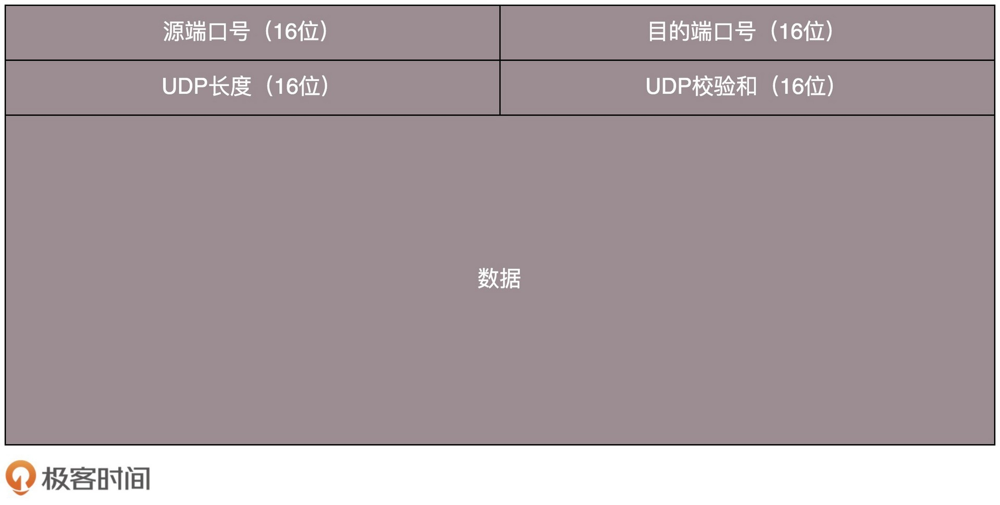
-
tcp 的包格式 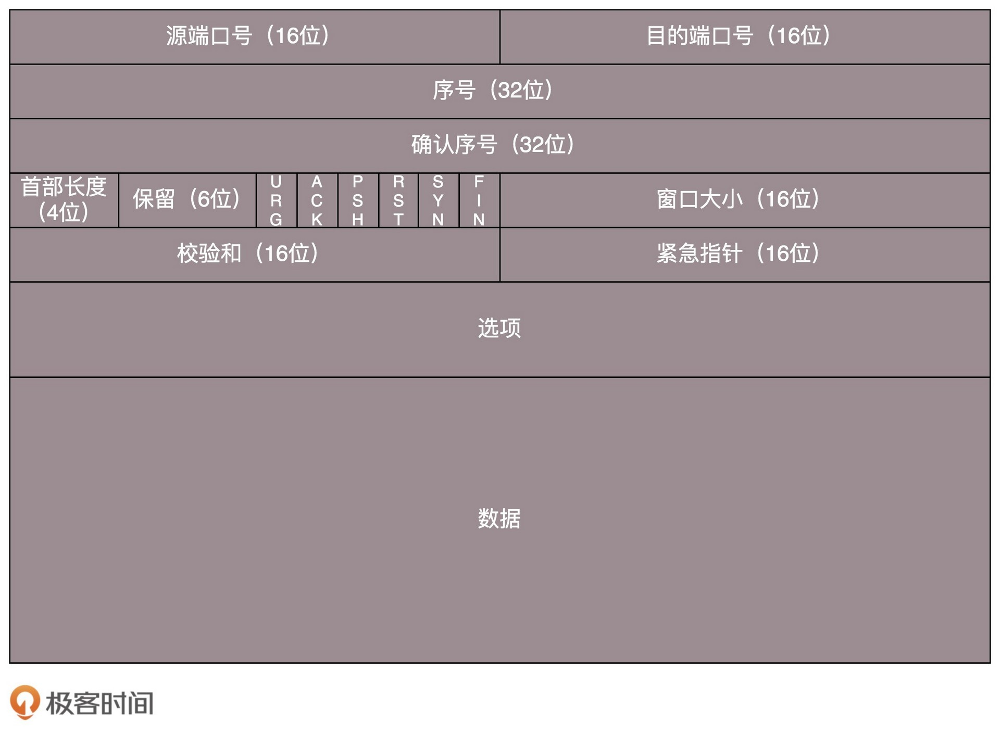
-
tcp 的三次握手过程
 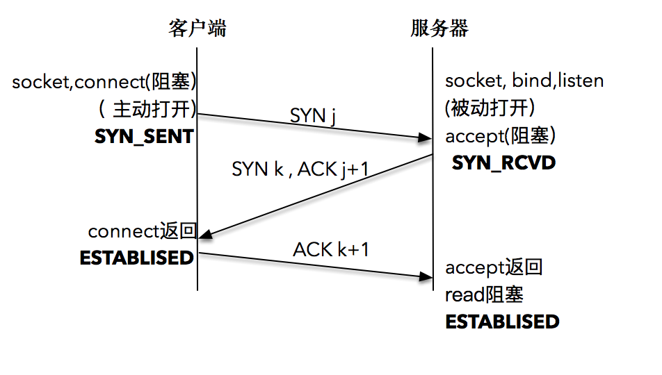 内核为每个socket维护两个队列，一个是已经建立连接的队列，这时候三次握手完毕处于ESTABLISHED状态，一个未完全建立连接的队列，三次握手还未完成处于SYN_RECVD状态。
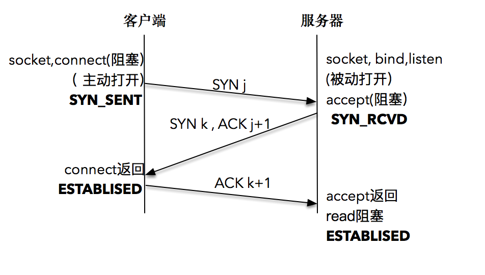 内核为每个socket维护两个队列，一个是已经建立连接的队列，这时候三次握手完毕处于ESTABLISHED状态，一个未完全建立连接的队列，三次握手还未完成处于SYN_RECVD状态。 -
tcp三次握手的目的
- 建立连接
- 连接双方沟通双方包的起始序号
- 为什么tcp是三次握手
因为三次握手的话，通信的双方都正好能确定自己发送的消息一去一回。多于三次握手的话就会造成信息的浪费
-
tcp的四次挥手

-
TIME_WAIT状态是为了解决什么问题？
- 解决客户端再发送完最后的ACK，服务端在没有收到ACK的情况下，等待客户端重发数据包
- 防止在没有TIME_WAIT的情况下，客户端退出腾出端口，该端口被新的应用占用后，接收到服务端上次发送来的包。
-
TIME_WAIT一般等多长时间？ 等2MSL(报文最大生存时间）一般是2min，只有在链接终止的一方才会进入TIME_WAIT
-
如何解决服务端在2MSL后仍然没有接收到客户端发出的最后的ACK？ 因为服务端没有收到ACK， 因此会重新发送FIN。客户端在收到FIN后，因为已经等了2MSL所以会直接发送RST重置链接，这样服务端就知道客户端已经下线。
-
tcp的发送缓存和接收缓存 发送缓存：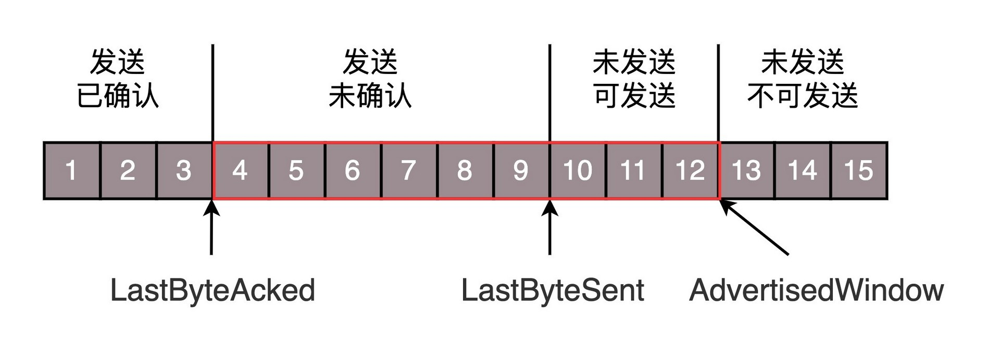 接收缓存 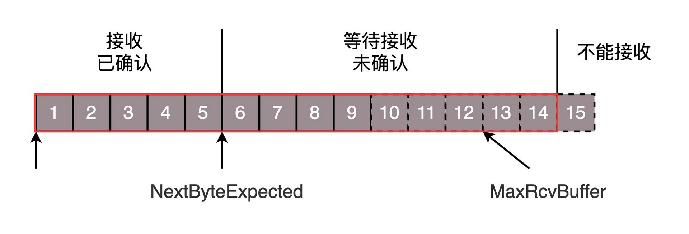 滑动串口和拥塞串口都是在这个缓存上实现的。
-
tcp如何保顺序性？
- 每个包都有序号，在建立连接的时候双发会商定双方序号的起始值，
- 发送方在未收到前面序号包的ack时，不会向前滑动窗口。每次发送接收方接收窗口规定数量之内的包。
- 接收方在没收到序号靠前的包之前，不会确认已收到的序号靠后的包
- tcp 靠重试防止丢包，重试的策略有那些？
- 超时重试: 对发出去的包要设定超时时间，在规定的超时时间内，没有收到ack的话，就重新发送，超时时间必须大于RTT(包往返时间)。 超时时间通过对RTT采样加权平均后得到。每次超时会把下一次超时时间设为原来值的两倍
- 快速重试：当客户端收到连续三个同一个包的ack时不等超时，马上重发下一个包。
-
tcp 如何解决接收方处理能力不足引起的网络问题? 通过滑动窗口，每个包的ACK都会标明接收窗口的大小，发送端按照接收窗口的规定数量，发送数据包 接收方应用读走一个字节，窗口增大一个字节。收到一个发送方字节窗口减小一个字节 当接收方应用读走的速度小于接收的速度则窗口减为0 当窗口减为0后，接收方并不是每读走一个字节就告诉发送方窗口加一，而是在读走一批后在增加窗口。防止刚读走马上填满的现象。
-
tcp 如何解决拥塞控制(网络处理能力不足)问题?
- 激进做法：通过拥塞窗口解决，拥塞窗口初始值设置为1个包的大小，每次发送一个当收到ack后，拥塞窗口大小+1，变为一次发送两个包的，当收到两个包的ack时，拥塞窗口+2，以此类推，呈指数增长，这个阶段叫慢启动，直到达到阈值ssthresh 65535字节，则此时减小增长速度，呈线性增长。当增长到出现丢包或超时重传出现，则将ssthresh降为拥塞窗口的一半，而拥塞窗口的大小直接降为1。再重启启动
- 不激进做法：当发现快速重传的现象出现时，ssthresh降为拥塞串口大小，而拥塞串口降为原来的一般，再开始启动。
-
tcp监听的soket和传数据的socket是一个？ 不是
-
tcp的问题场景及优化？ 参考极客时间网络编程13讲 场景一：交互场景下，比如ssh登录后敲命令，每次传输的数据可能都很小，如果每次都敲完命令都传送，就可能造成浪费。 优化：使用Nagle算法，发送端把接下来的连续几个小数据包缓存起来，等接受到前一个小数据包的ACK时，一并发送出去。 可以通过一下函数关闭Nagle算法
int on = 1; setsockopt(sock, IPPROTO_TCP, TCP_NODELAY, (void *)&on, sizeof(on));{style=”line-height: 160%; box-sizing: content-box; border: 0; border-radius: 0; color: #c1788b; padding: 4px 4px 2px 0; letter-spacing: -.3px;”}
场景二：发送速率快时，大量的ack会消耗带宽， 优化：服务端累计ack，等到有数据要回复客户端时连同ack，一并回复。
-
udp 使用connect函数的意义？ 并不是为了建立连接，而是绑定当前socket和对端地址及端口的映射，以便似的底层icmp返回的对端不可达等错误信息能直接返回到当前socket上。负责发送将阻塞。同时connect可以提高udp发送接收性能，因为udp在每次发送和接收时都会建立上述映射关系，如果用connect提前建立映射，就可以提高性能。
-
如何解决服务端重启导致的”地址已经被使用问题”?
- 出现原因：”地址已经被使用”是因为服务端关闭时主动断开了链接，从而在发送完最后的ack后进入TIME_AWAIT状态，因此连接并未释放，而链接是有(srchost srcport dstport dsthost)唯一标识，因为重启后四元组相同，因此出现链接已经被使用
-
如何优化：
int on = 1; setsockopt(listenfd, SOL_SOCKET, SO_REUSEADDR, &on, sizeof(on));{style=”line-height: 160%; box-sizing: content-box; border: 0; border-radius: 0; color: #c1788b; padding: 4px 4px 2px 0; letter-spacing: -.3px;”} - 优化原理： 重启后新链接的syn要比老连接结束时最大的syn大，这样通过序号就能区别出新老链接 重启后开启tcp_timestamps，使得新连接的时间戳比老连接的大，这样从时间戳上也能区分新老连接。
-
如何理解tcp的流 TCP是面向连接的，也就是说，在连接持续的过程中，socket中收到的数据都是由同一台主机发出的，因此，保证数据是有序的到达就行，至于每次读取多少数据自己看着办。 而UDP是无连接的协议，也就是说，只要知道接收端的IP和端口，且网络是可达的，任何主机都可以向接收端发送数据。这时候，如果一次能读取超过一个报文的数据，则会乱套。所以tcp有粘包问题需要应用程序自己设计包分隔符。
-
tcp的故障模式有哪些？如何处理？ 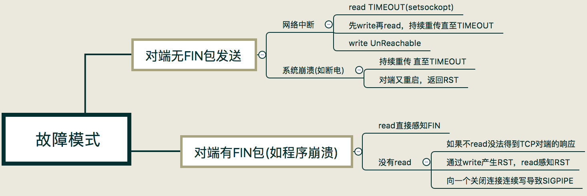
4. 应用层协议
-
http 的包结构 header + body 请求报文格式
 响应报文格式
响应报文格式 
-
http1.1的队头堵塞？ http的请求应答的模式，只有在收到上一个请求的应答才能发出下一个请求，导致在一条连接内，如果有一个请求响应较慢，就会造成请求排队的情况，这就叫队头阻塞
-
http1.1如何解决对头阻塞？ 同一个域名建立多个长连接
-
http如何传送大文件
- 数据压缩
- 分块传输：服务端通过响应头中Transfer-Encoding: chunked表示报文是分块传输的
- 范围请求：范围请求不是必须实现的功能，服务端必须通过Accept-Ranges: bytes告知客户端支持范围请求。请求头通过range:bytes=x-y, x1-y1 字段发起返回请求，x和y单位是字节。
-
http如何管理链接 http1.1之前是短连接，http1.1默认开启长连接。客户端可以在请求头中添加Connection: close关闭长连接，也可以通过Connection: keep-alive显示开启长连接
- https的链接 分为两个部分，tls握手+秘钥通信
- https的握手流程？ tls 1.2
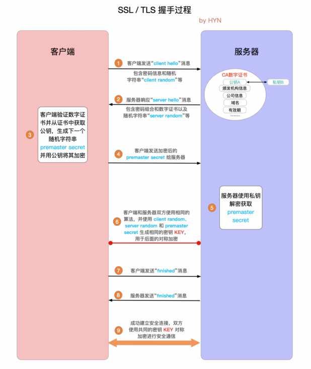
- 1和2主要是客户端和服务端协商要用的TLS版本和密码套件,以及交换随机数
- 3验证服务端证书，并用公钥生成随机字符串，并用公钥加密
- 4客户端发送用公钥生成的随机字符串到服务端。
- 5、6客户端和服务端用三个随机串及协商好的一套算法，生成对称秘钥
- 7、8客户端服务端互发fnished消息结束握手
-
http1和http2，http3有什么区别？
-
http2：
- TTP/2 必须先发送一个”连接前言”字符串，然后才能建立正式连接
- 采用HPACK算法实现头部压缩，hpack算法就是一种查表算法，通过在服务端和客户端两边建立一份索引表，如下，在传送头部数据时传送索引序号就行

- http2传送的消息不再是Header+Body的形式的明文，而是分散的多个二进制帧。格式如下

- http2采用了流的形式解决了http1的对头阻塞问题，同时实现了多路复用（一条连接内可以并发发送请求）
一个流id标志一次请求应答，流内是有严格的顺序
多个流可以乱序发送
流也可以设置优先级，让服务器优先处理
流id不能重用只能递增
- http2是基于tls的

- http3:
- 使用新的quic协议代替了tcp协议，解决了tcp的对头阻塞问题。
- QUIC 是一个新的传输层协议，建立在 UDP 之上，实现了可靠传输；
- QUIC 内含了 TLS1.3，只能加密通信，支持 0-RTT 快速建连
- QUIC 的连接使用"不透明"的连接 ID，不绑定在"IP 地址 +
端口"上，支持"连接迁移"
- QUIC 的流与 HTTP/2 的流很相似，但分为双向流和单向流
- HTTP/3 没有指定默认端口号，需要用 HTTP/2
的扩展帧"Alt-Svc"来发现。
2. linux网络管理
1. linux的网络栈是怎样的？
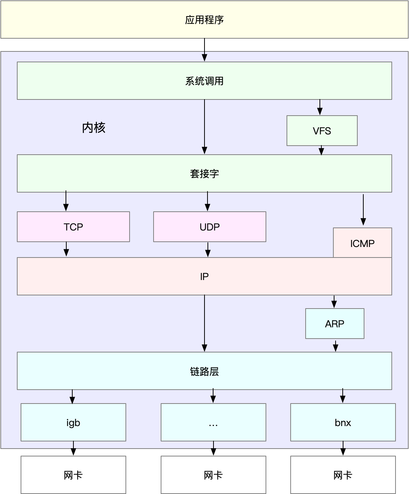
- 内核中网络相关的数据结构：
- sk_buf: 套接字缓存区，接收网卡数据，并在各层之间传递。且避免数据拷贝。多个sk_buf以双向链表的方式组织，构成了缓冲区等待队列。
- net_device: 描述了一个网卡设备,每个网卡设备是通过驱动程序注册到内核 在/sys/class/net/下能看到当前系统都有哪些网卡设备
- 网络设备的关键属性
2. linux的收发包流程是怎样的

- 传统的收包流程
 
- cpu接收到终端信号，执行网卡驱动提供的中断处理函数net_interrupt,
- net_interrupt调用网卡驱动的net_rx 创建sk_buf，
- net_rx 调用内核的netif_rx将sk_buf放入等待队列，并触发软中断
- 内核执行软中断处理函数net_rx_action
- 软中断从队列中取出sk_buf，并交给协议层函数处理。
- 数据链路层协议去掉帧头、帧尾，交给网络层
- 网络层判断包的走向是交给上层还是转发，netfilter就在这层做处理
- 传输层将数处理完数据后将数据交给soket接收缓存，数据到达应用层。
- NAPI(高速设备）收包流程
- 第一个分组到达，网络设备触发irq，驱动程序将设备(net_device)保存到轮询表上。
- 关闭接收IRQ net_rx_action 轮询轮询表上的设备，调用网卡驱动实现的poll函数来 只要设备的rx(接收缓存区）有分组就一直处理，直到全部处理完成
-
打开接收IRQ 注意：
- 设备必须满足一下两个条件
1. 设备必须能保存分组到自己的缓冲区rx
2. 设备必须能够支持禁用接收IRQ
- 支持NAPI的设备必须提供一个poll函数(用来轮询分组）
-
发包流程
- 首先应用层调用soketApi发送数据
- 协议层从socket缓冲区取出数据，逐层处理，比如传输层加上传输层头，ip层加上ip头，执行路由并按照mtu的大小对报文分片。
- 协议层处理完成后将数据放入sk_buf缓冲区
- 触发软中断，软中断将sk_buf放入dm环形缓冲区并通知设备驱动发送数据。
注意：
- 收发包流程一共涉及到俩次数据拷贝，从环形队列缓冲区到sk_buf, 从sk_buf到socket缓冲区
- 共涉及到3缓冲区，环形队列缓冲区属于网卡驱动层级，sk_buf用来串联协议流程，socket缓冲区与协议栈交互的应用层缓冲区。sk_buf由slab管理。
3. linux的netfilter是怎样的？
- netfilter 是什么？ 它是一个linux的内核框架，位于网络层，它可以根据动态定义的条件来过滤和操作分组。iptables就是基于netflink做的
- netfilter是如何工作的,及iptables如何使用 参考映象笔记
4. I/O模型
1. IO多路复用
- select/poll的实现原理 调用select会发生以下几步
- 从用户空间拷贝fd_set到内核空间
- 注册回调函数__pollwait；(这个函数的作用就是将当前进程加入设备自己特有的等待队列）
- 遍历fd，调用设备的poll函数查看设备是否就绪
- 设备就绪，设置fd,
系统调用返回并将fd_set从内核空间拷贝到用户空间
- 设备未就绪则调用__pollwait将当前进程睡眠
- epoll的实现原理
- 执行epoll_create时，在内核创建了红黑树和就绪链表
- 执行epoll_ctl时，如果增加socket句柄，则检查在红黑树中是否存在，存在立即返回，不存在则添加到树干上，然后向内核注册回调函数，用于当中断事件来临时向准备就绪链表中插入数据;
- 执行epoll_wait时立刻返回准备就绪链表里的数据即可。
- epoll事件的两种触发方式
- LT 只要一个描述符上事件没有处理完，就一直触发
- ET 只在从不就绪到就绪的那一刻触发一次
- select、poll、epoll的区别
- select 有最大描述符数限制，32位机器通常是3232，64位通常是3264。poll没有，poll使用的是描述符链表。epoll也没有
- selec/poll每次就绪时，在用户空间都得遍历描述符集合，性能较低。epoll直接返回的就是就绪链表
- select/poll每次都得把描述符集合从用户空间拷贝到内核空间，epoll不需要。
- select、poll的编程函数
- `int select(int maxfd, fd_set *readset, fd_set *writeset, fd_set *exceptset, const struct timeval *timeout);`{style="line-height: 160%; box-sizing: content-box; border: 0; border-radius: 0; color: #c1788b; padding: 4px 4px 2px 0; letter-spacing: -.3px;"}
- `int poll(struct pollfd *fds, unsigned long nfds, int timeout); // *fds 是个链表`{style="line-height: 160%; box-sizing: content-box; border: 0; border-radius: 0; color: #c1788b; padding: 4px 4px 2px 0; letter-spacing: -.3px;"}
2. IO设计模式
- 阻塞IO+进程 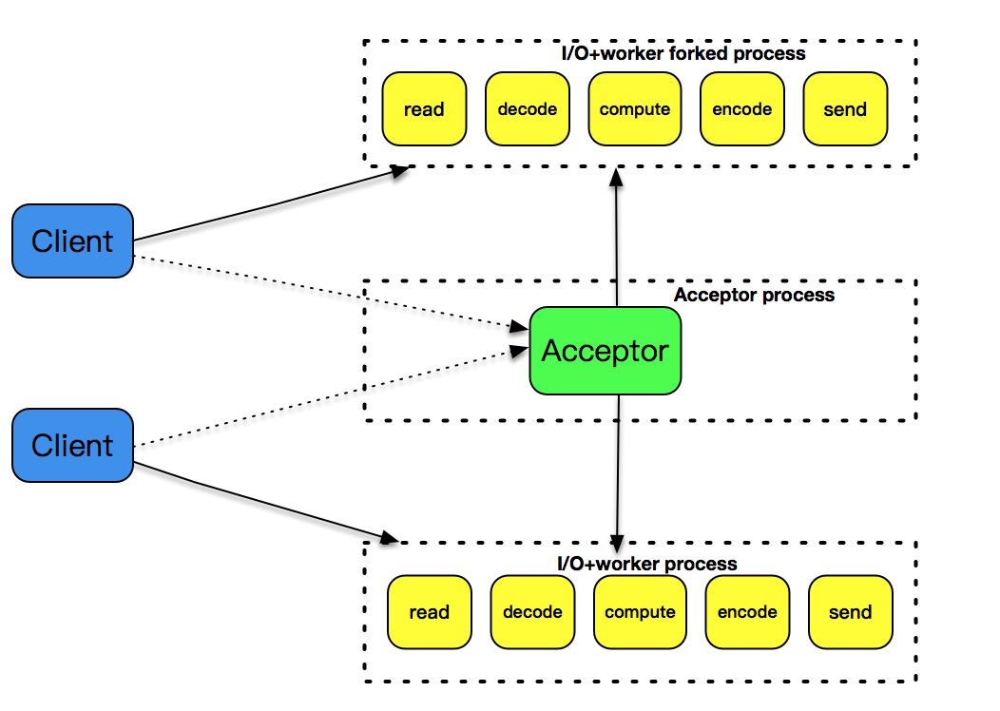
``` {style=”line-height: 160%; box-sizing: content-box; border: 0; border-radius: 0; margin: 2px 0 8px; background-color: #f5f7f8;”} // 伪代码 fd = accept(listenfd) fork(fd)
2. 阻塞IO+线程

``` {style="line-height: 160%; box-sizing: content-box; border: 0; border-radius: 0; margin: 2px 0 8px; background-color: #f5f7f8;"}
// 伪代码
fd = accept(listenfd);
thread(fd)
- 非阻塞IO + 事件通知 + 单线程（reactor) 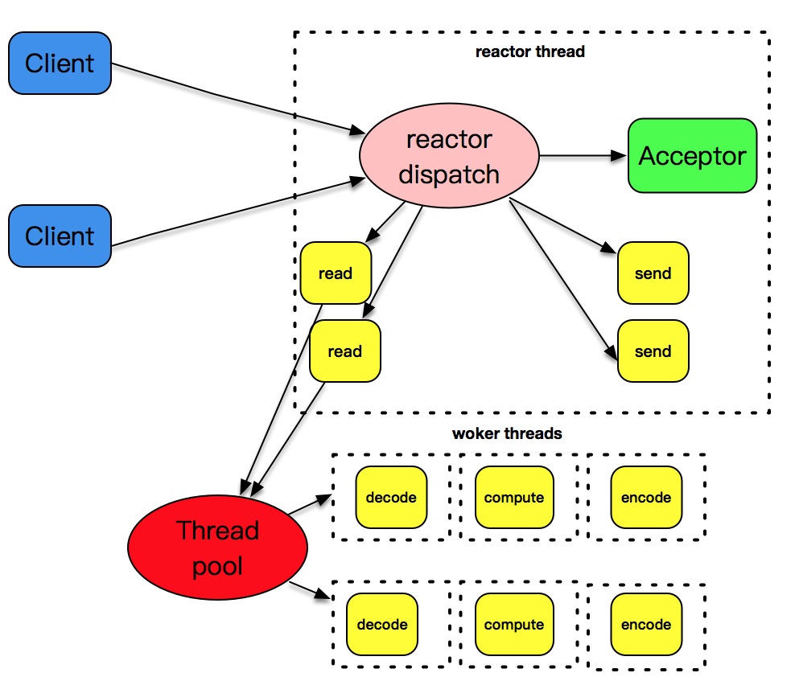
``` {style=”line-height: 160%; box-sizing: content-box; border: 0; border-radius: 0; margin: 2px 0 8px; background-color: #f5f7f8;”} // 伪代码 // 等待可读，可写，可连接事件发生 epoll_wait(readfd, writefd, acceptfd) fd = accept(acceptfd) epoll.add(fd) // 每种事件分别交给线程池处理 threadpoll.put(readfd) threadpoll.put(writefd)
4. 非阻塞IO + 事件通知 + 多线程 (主从reactor)

``` {style="line-height: 160%; box-sizing: content-box; border: 0; border-radius: 0; margin: 2px 0 8px; background-color: #f5f7f8;"}
// 伪代码
// 主reactor, 只负责监听可连接事件，并将连接好的fd分发到从reactor线程
epoll_wait(acceptfd)
fd = accept(acceptfd)
subreactor.put(fd)
// 从reactor 负责监听可读，可写事件，并将就绪事件交给读写线程池
epoll_wait(readfd, writefd)
thradPoll.put(readfd)
thradPoll.put(writefd)
- 异步IO + 多线程
4. 网络工具
- 查看网络配置 ifconfig(net-tools) ip(iprout2)
- 显示套接字信息, 协议栈信息 netstat ss
- 网络吞吐和pps(每秒传输的包数) sar(sysstat) -n
- 连通性和延时 ping, hping3 traceroute
- 抓包 tcpdump
- 查看网卡信息 ethtool eth0